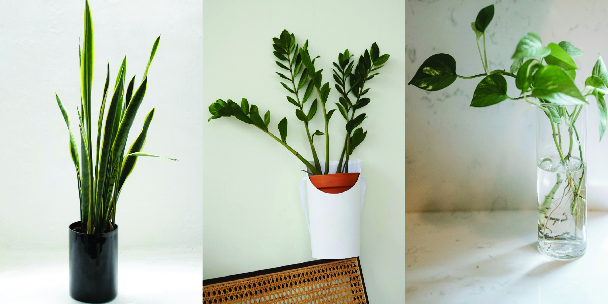
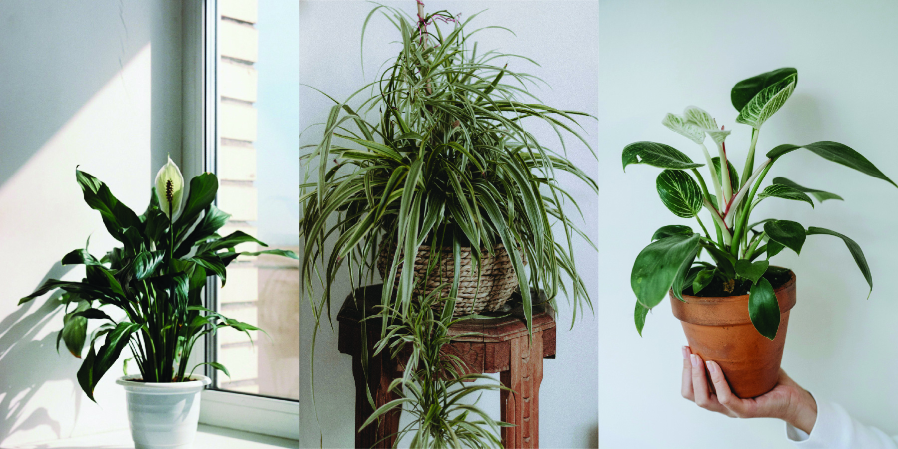
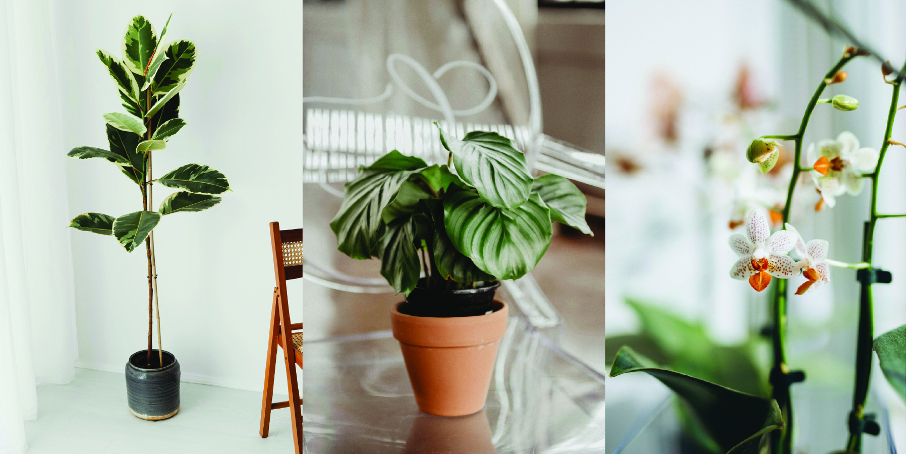

Recommendations
No matter your level of experience, there's a perfect plant for you! Here's a guide to help you find the right leafy friend based on your lifestyle and comfort with plant care.
Beginner-Friendly Plants
Perfect for first-time plant parents or anyone who wants low-effort greenery. These plants are great for forgetful waterers and busy schedules.
Examples:
- Snake Plant - Thrives on neglect, tolerates low light, and barely needs water.
- ZZ Plant - Almost impossible to kill, great for darker spaces.
- Pothos - Fast-growing, forgiving, and looks amazing hanging or trailing.
Intermediate Plants
Ideal if you're ready for a bit more interaction and care. These plants are great if you have a sunny window and check in with your plants a few times a week.
Examples:
- Peace Lily - Needs a bit more watering, but it lets you know when it's thirsty by drooping slightly.
- Spider Plant - Loves bright, indirect light and produces cute baby plants (spiderettes).
- Philodendron - A little more sensitive to light and water, but still super rewarding.
Advanced & High-Maintenance Plants
Great for plant lovers who enjoy the challenge and reward of detailed care. These plants love consistency—track your care routine to keep them thriving.
Examples:
- Fiddle Leaf Fig - Beautiful but picky; needs lots of light and stable conditions.
- Calathea - Gorgeous patterns, but very sensitive to humidity and water quality.
- Orchids - Stunning blooms but require specific light, watering, and potting needs.